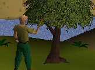
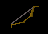
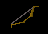
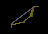
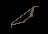
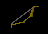
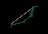
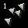
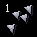
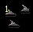

|
Fletching
Fletching is only available to RuneScape members. Please subscribe to get this feature.
Making Bows
|
To make bows you first need to acquire some wood. Depending on the type of tree you chop down you can get different sorts of logs. Next use a knife with the logs to cut them into either a shortbow or a longbow. If you want to make several of the same object, simply right-click and select the number you wish to produce. To make a bow string you need to find a flax plant and use it with a spinning wheel. Finally add the string to the bow to complete it.
Rarer types of wood are harder to acquire, but make better bows which shoot more accurately. The table below lists the different types of bow you can make. A similar table to the one below can be opened in the game by clicking the fletching skill icon in the stats menu.
|
 |
Different types of bow
|
Bow type |
Picture of Bow |
Fletching level to make |
|
Bow |
 |
Shortbow: Level 5
Longbow: Level 10 |
|
Oak Bow |
 |
Shortbow: Level 20
Longbow: Level 25 |
|
Willow Bow |
 |
Shortbow: Level 35
Longbow: Level 40 |
|
Maple Bow |
 |
Shortbow: Level 50
Longbow: Level 55 |
|
Yew Bow |
 |
Shortbow: Level 65
Longbow: Level 70 |
|
Magic Bow |
 |
Shortbow: Level 80
Longbow: Level 85 |
Making arrows
To make an arrow-shaft just use a knife with some ordinary logs. Add a feather to the arrow shaft, and finally add an arrow-head to complete the arrow. Arrow heads can either be purchased from the member's archery shop, or smithed at an anvil. Better arrow heads will inflict more damage, but you will require a better bow to fire them. The table belows lists the different arrow types:
|
Arrow type |
Fletching level to make |
Minimum bow required |
|
Bronze arrows |
|
Level: 1 |
Any |
|
Iron arrows |
|
Level: 15 |
Any |
|
Steel arrows |
|
Level: 30 |
Oak Bow |
|
Mithril arrows |
|
Level: 45 |
Willow Bow |
|
Adamantite arrows |
 |
Level: 60 |
Maple Bow |
|
Rune arrows |
|
Level: 75 |
Yew Bow |
Crossbow Bolt Tips
Players using crossbows can make their bolts stronger by adding tips to them.
To add tips to a bolt, select the tips in your inventory and then click on the bolt to create tipped bolts.
There are three types of bolt tips available in the game: Opal tips, Pearl tips and barb tips.
Opal and Pearl tips can be made by using a chisel on cut opals or on oyster pearls. Barbed tips can only be purchased from the Ranging Guild.
You can find opals by mining gem rocks and you can find oyster pearls while Big Net fishing.
Below is a table showing the level requirements to add tips to bolts.
|
Bolt tip |
Picture of Tip |
Fletching level to make |
|
Opal tipped bolts |
 |
Level: 17 |
|
Pearl tipped bolts |
 |
Level: 34 |
|
Barbed bolts |
 |
Level: 51 |
Throwing Darts
Once you have completed the Tourist Trap quest you will be able to fletch darts to throw at your enemies. Firstly use your smithing skill to make metal bars into dart tips. Then add a feather to each dart tip to complete the dart. Darts are not as powerful as arrows or throwing knives. Players may poison their darts to do more damage to their opponents. Each weapon poison vial contains enough poison for 5 darts.
Below is a table showing the level requirements to make and wield darts.
|
Dart Type |
Smithing level to make dart tips |
Fletching level to make |
Ranged level to wield |
|
Bronze Darts |
|
Level: 4 |
Level: 1 |
Level: 1 |
|
Iron Darts |
|
Level: 19 |
Level: 22 |
Level: 1 |
|
Steel Darts |
|
Level: 34 |
Level: 37 |
Level: 5 |
|
Mithril Darts |
|
Level: 54 |
Level: 52 |
Level: 20 |
|
Adamantite Darts |
|
Level: 74 |
Level: 67 |
Level: 30 |
|
Rune Darts |
|
Level: 89 |
Level: 81 |
Level: 40 |
|